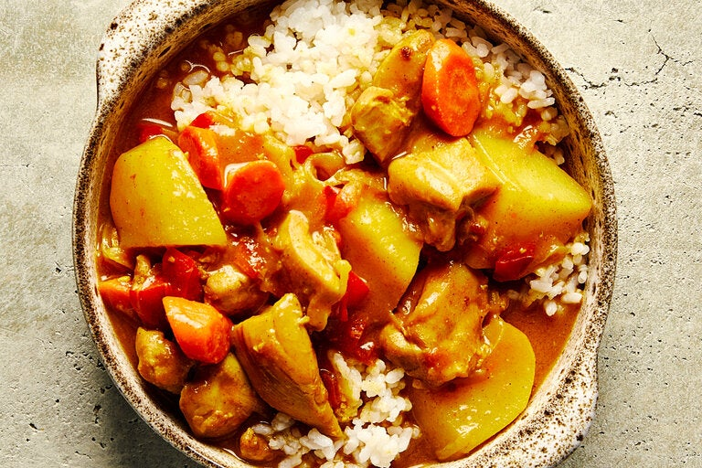

Japanese Curry Rice

Curry rice is instantly nostalgic and hearty, a dish that’s both warming and filling. Japanese curry has origins in India, and it made its way to Japan’s populace by way of the British. By the late 1960s, kare rice became a common sight in Japanese markets and restaurants, and the dish has since found its way into kitchens all over the world. There are as many variations of kare rice as there are cooks preparing the dish: It can easily be made pescatarian (utilizing seafood as the protein), vegetarian or even vegan (omitting the chicken and utilizing a vegetable-based broth). In this version, dashi is used to add umami, with a range of vegetables to add texture to the dish alongside its chicken.
Ingredients
- 2 tablespoons neutral oil
- 1½ pounds boneless skinless chicken thighs, cut into bite-size pieces
- Coarse kosher salt
- 2 onions, thinly sliced
- 3 garlic cloves, minced
- 1 (1½-inch) knob of ginger, peeled and finely chopped
- 1 red pepper, chopped
- 2 medium Yukon gold potatoes, cut into 1½- to 2-inch pieces
- 1 carrot, chopped rangiri style
- 1 apple, peeled and coarsely grated
- 3 tablespoons curry powder (preferably Japanese curry powder)
- 2 plum tomatoes, chopped
- 3 tablespoons potato starch
- 4 cups dashi or chicken broth
- 2 tablespoons soy sauce
- 2 tablespoons tonkatsu sauce
- 1 tablespoon honey
- Cooked Japanese short-grain rice, for serving
- Fukujinzuke (chopped Japanese pickles), for serving
Preparation
- Heat 1 tablespoon of oil in a Dutch oven over medium-high heat. Place chicken pieces in pan, season with 1 tablespoon salt and cook until beginning to brown, stirring occasionally, 7 to 10 minutes, then remove chicken while retaining the fat in the pan.
- Add the second tablespoon of oil to the pan. Add the onions, garlic, ginger and red pepper and cook, stirring frequently, until fragrant, 2 to 3 minutes.
- Add the potatoes, carrot and apple. Continue stir-frying, shifting ingredients constantly, until vegetables start to soften, 5 to 7 minutes.
- Add curry powder to vegetables in the pan, stirring constantly to incorporate. Add the tomatoes and the browned chicken and any juices to the pan, then add the potato starch and stir.
- Gradually stir dashi into the pan and bring to a simmer. Reduce heat to medium-low and simmer, stirring occasionally, until the sauce has thickened to a gravy-like consistency and the vegetables are cooked through, 17 to 20 minutes. Season with soy sauce, tonkatsu sauce and honey, adjusting seasonings accordingly.
- Divide rice among plates or bowls, then add curry and serve with fukujinzuke.